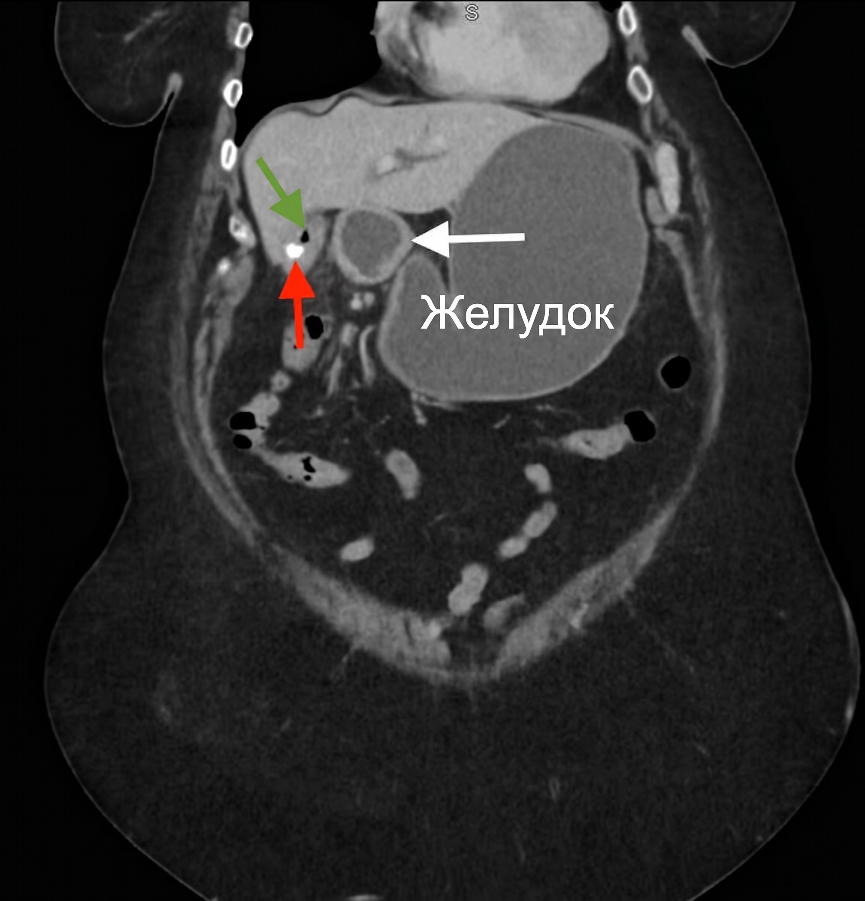
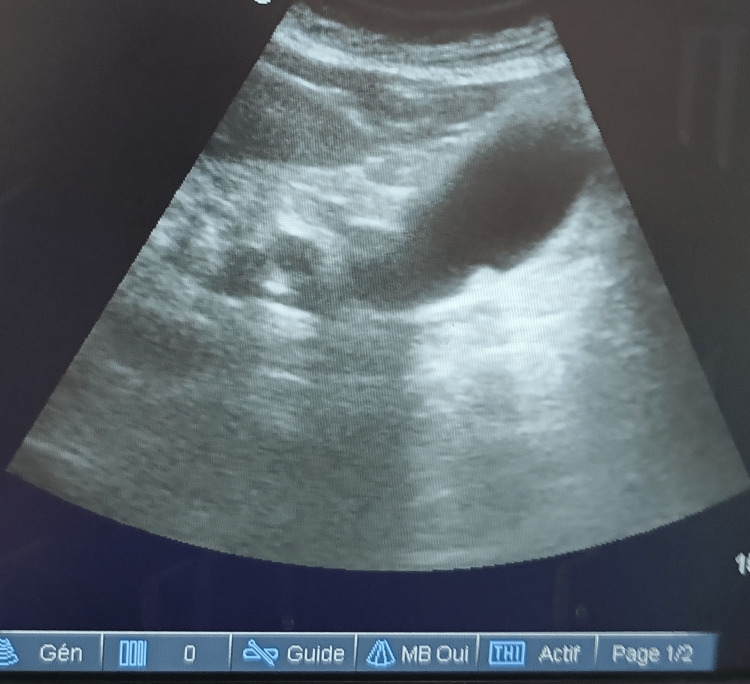

Желчнокаменная болезнь. Острый холецистит
Желчнокаменная болезнь: определение, распространённость и классификация камней
Желчнокаменная болезнь (cholelithiasis) — образование конкрементов в желчном пузыре или желчных протоках. Заболевание чаще встречается у женщин, а 75% пациентов с желчными камнями — люди старше 60 лет. При длительном течении у 5% больных развивается рак желчного пузыря.[Кузин, с. 385]
По химическому составу желчные камни делят на три типа:
Холестериновые камни составляют 75% всех желчных камней в европейских странах. Это округлые или фасетированные светло-жёлтые крупные образования из моногидрата холестерина. Пигментные камни тёмные, мелкие, состоят из билирубината кальция; у 50—60% больных с гемолитической микросфероцитарной анемией ЖКБ развивается по этому механизму. Смешанные камни слоисты, содержат холестерин, билирубин и соли кальция.[Синдромология, с. 304]
Желчь становится литогенной при нарушении соотношения её компонентов. Система Адмиранда–Смолла описывает равновесие между холестерином, желчными кислотами и лецитином: при избытке холестерина или нехватке мицеллярных компонентов холестерин выпадает в осадок. Выработку холестерина повышают ожирение, приём пероральных контрацептивов и гиперлипидемия. Синтез желчных кислот снижается при болезнях подвздошной кишки. Застой желчи при гипомоторной дискинезии усугубляет сдвиг.[Синдромология, с. 306]
Диагностика базируется на УЗИ. Пероральная холецистография выявляет холелитиаз менее чем у 70% больных и применима только при билирубине сыворотки не менее 3 мг/100 мл (51 ммоль/л). Камни в общем желчном протоке встречаются у 50% больных острым холециститом.[Кузин, с. 385]
Механизм камнеобразования и патогенез ЖКБ
Конкременты состоят из холестерина, билирубина и солей кальция. Их размеры варьируют от 1–2 мм до 3–5 см.[Кузин, с. 381]
Формирование холестериновых камней проходит несколько этапов. В литогенной желчи происходит нуклеация — образование центров кристаллизации из бактерий, слизи и клеток эпителия.[Кузин, с. 381] Гипомоторная дискинезия (при беременности, голодании, приёме лекарств) обеспечивает застой желчи и сгущение её компонентов. Застой провоцирует инфекцию: бактерии повреждают слизистую, нарушая всасывание компонентов желчи. Распространение инфекции по билиарному тракту обусловливает 30–40% бактериальных абсцессов печени. Патогенетическая цепочка: литогенная желчь → нуклеация → застой → рост кристаллов → инфекция → повреждение слизистой → конкремент.
Пигментное камнеобразование происходит при гемолитических анемиях (у 50–60% больных с гемолитической микросфероцитарной анемией) из-за избыточного выведения печенью свободного билирубина, выпадающего в виде билирубината кальция.[Синдромология, с. 306]
Бессимптомное течение ЖКБ и печёночная (желчная) колика
Бессимптомное течение ЖКБ характеризуется наличием конкрементов без клинических проявлений; камни выявляют случайно при УЗИ, операциях или вскрытии.[Кузин, с. 382]
Печёночная колика — острый приступ боли при внезапном нарушении оттока желчи из-за ущемления конкремента в шейке пузыря или пузырном протоке и повышения давления в желчных путях. Интенсивная боль в правом подреберье и эпигастрии рецидивирует каждые 2—5 мин, длится от нескольких минут до нескольких часов. Приступ провоцируется погрешностью в диете, нагрузкой или стрессом.[Кузин, с. 382]
Боль иррадиирует под правую лопатку, в плечо и предплечье. Симптом Боткина — иррадиация боли в область сердца по висцеральным нервным связям. Приступ сопровождается тошнотой, рвотой желчью, потливостью. Температура тела и уровень лейкоцитов остаются нормальными, что отличает колику от острого холецистита. Боль купируется самостоятельно или спазмолитиками при смещении камня.[Кузин, с. 382, 392]
Холецистография эффективна менее чем у 70% больных при билирубине от 3 мг/100 мл (51 ммоль/л), поэтому УЗИ является методом выбора.[Синдромология, с. 305] Камни в общем желчном протоке имеются у 50% больных острым холециститом, а у 5% больных при длительном течении ЖКБ развивается рак желчного пузыря.[Кузин, с. 388]
Хронический калькулёзный холецистит: клиника в межприступный период
Хронический калькулёзный холецистит проявляется постоянными симптомами в межприступный период из-за воспаления стенки пузыря и нарушенного оттока желчи.
Пациенты жалуются на тупые ноющие боли и тяжесть в правом подреберье после еды, метеоризм и понос после жирной пищи из-за дефицита желчных кислот в кишечнике. Развиваются горечь во рту и изжога, вызванные дуоденогастральным рефлюксом — забросом желчи и содержимого двенадцатиперстной кишки в желудок и пищевод.
Каменный острый холецистит возникает у 25% больных хроническим калькулёзным холециститом. Летальность при холецистэктомии по поводу острого холецистита составляет 6—8%, а у лиц пожилого и старческого возраста — 15—20%.[Кузин, с. 395] У 20% больных в межприступный период пальпируется увеличенный, умеренно болезненный желчный пузырь.
Острый холецистит: клиническая картина и физикальные симптомы
Острый холецистит — острое воспаление стенки желчного пузыря, чаще возникающее как осложнение желчнокаменной болезни (каменный вариант, развивается примерно у 25 % больных хроническим калькулёзным холециститом). Типичный пациент — тучная женщина средних или старших лет; приступ начинается через несколько часов после жирной или жареной пищи.[Кузин, с. 391]
Боль в правом подреберье постоянная, давящая, нарастающая, держится часами и не проходит от спазмолитиков (в отличие от печёночной колики, где боль схваткообразная). Иррадиация — под правую лопатку и в правое плечо из-за раздражения правого диафрагмального нерва. Почти одновременно возникает многократная рвота (сначала желудочным, затем дуоденальным содержимым), не приносящая облегчения.[Кузин, с. 382]
Присутствуют системные признаки воспаления: температура субфебрильная при катаральной форме и фебрильная при флегмонозной; пульс 80–90 ударов в 1 мин при катаральном воспалении и 100 ударов в 1 мин и более при флегмонозном; умеренный лейкоцитоз (10–12 · 10/л при катаральном). При печёночной колике температура нормальная, лейкоцитоз отсутствует.[Кузин, с. 392]
При осмотре выявляется напряжение мышц в правом верхнем квадранте живота. У 20 % больных пальпируется увеличенный, умеренно болезненный желчный пузырь.[Кузин, с. 311]
Специальные симптомы положительны: Симптом Ортнера — болезненность при поколачивании ребром ладони по правой рёберной дуге; Симптом Георгиевского–Мюсси (френикус-симптом) — болезненность при надавливании между ножками грудино-ключично-сосцевидной мышцы справа (раздражение правого диафрагмального нерва).[Кузин, с. 311]
| Признак | Печёночная колика | Острый холецистит |
|---|---|---|
| Характер боли | Схваткообразная, рецидивирует каждые 2–5 мин | Постоянная, нарастающая, длится часами и сутками |
| Иррадиация | Правая лопатка, правое плечо, иногда сердце | Правая лопатка, правое плечо |
| Рвота | Есть, не приносит облегчения | Многократная, не приносит облегчения |
| Температура | Нормальная | Субфебрильная → фебрильная |
| Тахикардия | Умеренная, до 100 ударов в 1 мин | 80–90 (катар.) → ≥100 (флегм.) ударов в 1 мин |
| Лейкоцитоз | Отсутствует | Умеренный, 10–12 · 10/л и выше |
| Напряжение мышц живота | Отсутствует или незначительное | Есть в правом верхнем квадранте |
| Симптом Ортнера | Может быть положительным | Положительный |
| Симптом Георгиевского–Мюсси | Может быть положительным | Положительный |
| Пальпируемый желчный пузырь | Редко | У 20 % больных |
| Ответ на спазмолитики | Боль купируется | Без эффекта |
Пример клинической картины: тучная пациентка после жирной пищи с постоянной болью, температурой 38,2 °С, пульсом 96 ударов в минуту, напряжением мышц в правом верхнем квадранте и положительными симптомами Ортнера и Георгиевского–Мюсси. Назначают экстренное УЗИ и анализ крови. Клиническая картина острого холецистита требует госпитализации и решения вопроса о хирургическом лечении из-за риска прогрессирования от катаральной формы к флегмонозной и гангренозной.[Кузин, с. 393]
Дифференциальная диагностика острого холецистита
Дифференциальная диагностика проводится с печёночной коликой, острым панкреатитом и другой острой патологией брюшной полости.[Кузин, с. 311]
Шаг 1. Печёночная колика
При колике боль схваткообразная и купируется спазмолитиками, а воспалительные признаки (лихорадка, лейкоцитоз) отсутствуют. При холецистите боль постоянная, давящая, спазмолитики неэффективны, присутствуют температура и лейкоцитоз.[Кузин, с. 382]
Шаг 2. Острый панкреатит
Разграничение строится на четырех признаках:[Кузин, с. 311]
1. Боль при панкреатите опоясывающая (отдаёт в спину и оба подреберья из-за забрюшинного распространения экссудата), при холецистите — в правом подреберье и плече.[Кузин, с. 236]
2. Острый панкреатит часто провоцируется алкоголем с жирной пищей.
3. Для тяжёлого панкреатита характерен парез кишечника (вздутие, отсутствие перистальтики и газов из-за блокады вегетативной регуляции).
4. При панкреатите резко повышен уровень амилазы крови и мочи; при холецистите она повышается только при сопутствующем холецистопанкреатите.[Кузин, с. 403]
Шаг 3. Другая острая патология брюшной полости
Исключают прободную язву, острый аппендицит, почечную колику и гинекологическую патологию. УЗИ выявляет конкременты от 1–2 мм, утолщение стенки пузыря и перипузырный экссудат. Камни в общем желчном протоке встречаются приблизительно у 50 % больных острым холециститом и могут вызывать механическую желтуху. При билирубине свыше 0,02–0,03 г/л холецистохолангиография неприменима из-за нарушения функции гепатоцитов. Бактериальный абсцесс печени (в 30–40 % случаев билиарного происхождения) дифференцируют по КТ и гектической лихорадке.
| Признак | Острый холецистит | Печёночная колика | Острый панкреатит |
|---|---|---|---|
| Характер боли | Давящая, нарастающая, держится часами | Схваткообразная, рецидивирует каждые 2–5 мин | Опоясывающая, интенсивная, постоянная |
| Иррадиация | Правое плечо, правая лопатка | Правое плечо, правая лопатка | Спина, оба подреберья («пояс») |
| Связь с алкоголем | Не характерна | Не характерна | Характерна |
| Температура и лейкоцитоз | Повышены | Норма или незначительно | Повышены |
| Парез кишечника | Не типичен | Отсутствует | Характерен при тяжёлом течении |
| Амилаза крови/мочи | Норма (↑ при холецистопанкреатите) | Норма | Резко повышена |
| Ответ на спазмолитики | Частичный, боль возвращается | Полное купирование | Слабый |
| УЗИ | Камни, утолщение стенки, жидкость вокруг пузыря | Камни, стенка не изменена | Отёк поджелудочной железы, камни могут быть |
УЗИ превосходит пероральную холецистографию (чувствительность которой менее 70 % и требует билирубина не менее 3 мг/100 мл (51 ммоль/л)) примерно в 1,4 раза по чувствительности и является главным методом диагностики.[Синдромология, с. 305]
Осложнения калькулёзного холецистита
Осложнения делят на процессы внутри пузыря (водянка, эмпиема) и выходящие за его пределы (свищи, холецистопанкреатит, рак).

Водянка желчного пузыря развивается при обтурации шейки или протока камнем и маловирулентной флоре: желчь всасывается, содержимое становится бесцветным и слизистым, а пузырь растягивается. Пальпируется дно увеличенного, растянутого, безболезненного желчного пузыря.[Кузин, с. 385]
Эмпиема желчного пузыря — гнойное воспаление при аналогичной окклюзии, но с вирулентной инфекцией; сопровождается утолщением стенок, гнойным содержимым и выраженной интоксикацией.[Кузин, с. 385]
Билиодигестивный свищ образуется при прорыве стенки пузыря в полый орган (чаще холецистодуоденальный). Попадание воздуха в протоки вызывает аэрохолию (просветления на рентгенограмме). Миграция камня диаметром более 2 см приводит к желчнокаменной кишечной непроходимости (в терминальном отделе подвздошной кишки).[Кузин, с. 385] На КТ определяется триада Риглера: аэрохолия, расширение петель тонкой кишки и тень конкремента.
Холецистопанкреатит — сочетанное поражение из-за нарушения оттока панкреатического сока при холедохолитиазе, стриктуре сосочка или холангите; проявляется присоединением опоясывающей боли.[Кузин, с. 385]
Рак желчного пузыря занимает 5–6-е место среди опухолей ЖКТ, чаще возникает у женщин старше 50 лет. В 80–100 % случаев сочетается с ЖКБ (риск рака у пациента с ЖКБ — около 5 %).[Кузин, с. 397] Гистологически преобладают аденокарцинома и скиррозный рак. На поздних стадиях выявляются бугристая печень, асцит, желтуха. Своевременная холецистэктомия служит онкопрофилактикой.[Кузин, с. 398]
75 % пациентов с ЖКБ — старше 60 лет, и в этой группе риск развития осложнений максимален.
Синдром механической желтухи при ЖКБ
Механическая желтуха (синонимы: обтурационная, подпечёночная, застойная) — окрашивание кожи, склер и слизистых оболочек в жёлтый цвет вследствие гипербилирубинемии, возникшей из-за механического препятствия оттоку желчи из печени в двенадцатиперстную кишку: нарушается экскреция прямого, конъюгированного билирубина, и он поступает в кровь.[Синдромология, с. 292]
Причины механической желтухи при ЖКБ:
- Холедохолитиаз — камни в общем желчном протоке. Частота холелитиаза при ЖКБ достигает 30–35%, около 20% пациентов имеют «молчащие» камни общего печёночного или общего желчного протоков. Клиника складывается из триады: приступы болей в правом подреберье и эпигастрии, печёночная колика в анамнезе с желтухой, температура 38–39 °С.
- Синдром Мириззи — крупный камень в кармане Гартмана или в пузырном протоке сдавливает снаружи общий печёночный проток без проникновения конкремента в его просвет.
- Постхолецистэктомический синдром — «забытые» камни в протоках, стриктура большого сосочка ДПК, длинная культя пузырного протока или ятрогенное повреждение холедоха с рубцовым стенозом.[Синдромология, с. 292]
Синдром Курвуазье — пальпируемый, эластичный и безболезненный увеличенный желчный пузырь при механической желтухе. Положителен при опухолевой обструкции (дно пузыря удаётся пропальпировать у 30–40% больных раком головки поджелудочной железы) из-за растяжимости стенки. При холедохолитиазе из-за сморщенной склерозированной стенки симптом отсутствует.
Дифференциальная диагностика видов желтухи представлена в Таблице 1.
| Признак | Механическая | Паренхиматозная | Гемолитическая |
|---|---|---|---|
| Причина | Холедохолитиаз, опухоль, синдром Мириззи, стриктура | Вирусный гепатит, цирроз, токсическое поражение | Гемолитическая анемия (в т. ч. микросфероцитарная) |
| Преобладающая фракция билирубина | Прямой (конъюгированный) | Обе фракции | Непрямой (неконъюгированный) |
| Цвет мочи | Тёмная («пиво») | Тёмная | Обычный или слегка тёмный |
| Цвет кала | Светлый, обесцвеченный | Умеренно обесцвечен | Тёмный (гиперхолия) |
| Кожный зуд | Выраженный | Умеренный | Отсутствует |
| Печень | Увеличена умеренно | Значительно увеличена, болезненна | Может быть увеличена |
| Симптом Курвуазье | Положительный (при опухолевой обструкции) | Отрицательный | Отрицательный |
| Анемия | Нехарактерна | Нехарактерна | Выражена |
У 50–60% больных гемолитической микросфероцитарной анемией развивается ЖКБ с сочетанием обоих механизмов желтухи.[Кузин, с. 447] Механическая желтуха создаёт условия для восходящего холангита (причина 30–40% бактериальных абсцессов печени). Летальность после холецистэктомии по поводу острого холецистита составляет 6–8% (выше в пожилом и старческом возрасте), преимущественная причина — недиагностированный холедохолитиаз с холангитом.
Диагностика ЖКБ и острого холецистита: УЗИ как основной метод
Ультразвуковое исследование желчного пузыря — первичный метод диагностики. Выявляет конкременты размером 1–2 мм, утолщение стенки, скопление жидкости, дилатацию протоков. Диагностическая триада при остром холецистите: утолщение стенки пузыря, конкременты и экссудат в подпечёночном пространстве.[Кузин, с. 379] Информативность УЗИ при холедохолитиазе (присутствующем у ~50 % больных острым холециститом) ниже, чем при исследовании пузыря.[Синдромология, с. 304]

Конкремент отличается от полипа акустической тенью позади него. Холецистохолангиография выявляет холелитиаз менее чем у 70 % больных, применяется при невозможности УЗИ и уровне билирубина ≥ 3 мг/100 мл (51 ммоль/л); неприменима при обтурационной желтухе и непереносимости йода.[Синдромология, с. 305]
При механической желтухе метод выбора — РПХГ (ретроградная панкреатохолангиорентгенография) с канюлированием большого сосочка ДПК.[Кузин, с. 379] При недоступности ретроградного пути выполняет чрескожно-чреспечёночная холангиография (пункция внутрипечёночного протока с введением 100–120 мл контраста), проводимая непосредственно перед операцией.[Кузин, с. 379]
| Метод | Достоверность | Показания | Главные ограничения |
|---|---|---|---|
| УЗИ желчного пузыря | Высокая | Первичная диагностика ЖКБ, острый холецистит; контроль динамики | Ниже при холедохолитиазе; зависит от качества аппарата и оператора |
| Холецистохолангиография (пероральная / внутривенная) | 70–85 % | Когда УЗИ выполнить невозможно | Неприменима при обтурационной желтухе; требует билирубина ≥ 3 мг/100 мл (51 ммоль/л); противопоказана при непереносимости йода |
| РПХГ | Высокая (метод выбора при желтухе) | Механическая желтуха; диагностика поражения магистральных желчных путей | Инвазивна; риск панкреатита; требует эндоскопического оснащения |
| Чрескожно-чреспечёночная холангиография | Высокая (при расширенных протоках) | Обтурационная желтуха при недоступности ретроградного доступа | Риск желчеистечения; выполняется непосредственно перед операцией; требует расширенных протоков |
Алгоритм диагностики строится от УЗИ ко всем пациентам до РПХГ или чрескожно-чреспечёночной холангиографии при выявление механической желтухи.
Показания к хирургическому лечению калькулёзного холецистита
Показания к хирургическому лечению хронического калькулёзного холецистита:
- Частые тяжёлые приступы печёночной колики.[Кузин, с. 382]
- Крупные камни — постоянным давлением вызывают пролежень и некроз стенки с развитием перфорации и билиодигестивного свища.
- Мелкие камни — мигрируют в холедох, вызывая холедохолитиаз (наблюдается у ~50% больных острым холециститом; первично в протоках конкременты образуются лишь у 1–4% пациентов), механическую желтуху, холангит и острый панкреатит.[Кузин, с. 383]
- Малигнизация желчного пузыря — рак стенки возникает у 5% больных ЖКБ и в 80–100% случаев сочетается с желчнокаменной болезнью.[Кузин, с. 398]
- Неполное исчезновение симптомов между приступами (тяжесть, тупые боли, метеоризм).[Кузин, с. 382]
Желчная гипертензия (повышение давления из-за обструкции протоков, спазма сфинктера Одди или холангита) усиливается под действием наркотических анальгетиков, что делает их применение нежелательным.[Кузин, с. 393] Бессимптомное камненосительство не требует немедленной операции, решение принимается индивидуально. При наличии показаний консервативное лечение бесперспективно.[Кузин, с. 388]
Холецистэктомия: техника и интраоперационные дополнения
Холецистэктомия — удаление желчного пузыря — остаётся основным оперативным вмешательством при хроническом и остром калькулёзном холецистите.[Кузин, с. 388]
Выбор доступа определяется формой болезни, степенью воспаления и оснащённостью клиники:[Кузин, с. 387]
- Лапароскопический доступ — метод выбора при плановых операциях (через 4–5 троакаров). Летальность составляет доли процента, однако ятрогенное повреждение желчных протоков возрастает — до 0,3 % и выше.
- Мини-лапаротомный доступ (разрез длиной 3–5 см) не уступает лапароскопическому, но значительно дешевле по оснащению.
- Открытая холецистэктомия — резервный вариант при массивном воспалительном инфильтрате, невыделимости структур или конверсии.
Алгоритм выбора: при неосложнённом хроническом холецистите предпочтителен лапароскопический или мини-лапаротомный доступ; при остром холецистите с умеренным воспалением допустима лапароскопия, а при массивном инфильтрате — открытый доступ или конверсия; при холедохолитиазе или стенозе терминального отдела общего желчного протока объём операции расширяют.[Кузин, с. 395]
При выраженных воспалительных изменениях в гепатодуоденальной связке применяют холецистэктомию от дна: выделение начинают с дистального конца пузыря к шейке, поэтапно лигируя пузырную артерию и проток после мобилизации органа, а в брюшной полости оставляют дренаж.[Кузин, с. 395] Правило «критического взгляда безопасности» (critical view of safety) требует перед пересечением трубчатых структур четко визуализировать ровно два элемента — пузырный проток и пузырную артерию, входящие непосредственно в стенку пузыря.
Интраоперационная холангиография (введение контраста в пузырный проток под рентген-контролем) выполняется по показаниям: признаки холедохолитиаза, желтуха в анамнезе, расширение общего желчного протока по УЗИ, а также при бескаменном холецистите. Камни в общем желчном протоке присутствуют приблизительно у 50 % больных острым холециститом.[Кузин, с. 395]
При выявлении холедохолитиаза или стеноза протока проводят холедохотомию (продольный разрез передней стенки общего желчного протока), извлекают конкременты (инструментами, вымыванием или баллонным зондом) и устанавливают Т-образный дренаж для декомпрессии и оттока желчи.[Кузин, с. 389] При сочетании холедохолитиаза с обтурационной желтухой и тяжёлым состоянием пациента (особенно у лиц пожилого и старческого возраста) сначала выполняют срочную эндоскопическую папиллосфинктеротомию (ЭПСТ) с удалением камней корзинкой Дормиа или зондом Фогарти, а холецистэктомию проводят в плановом порядке после стабилизации. При стриктурах дистального отдела общего желчного протока более 2 см ЭПСТ неприменима.[Кузин, с. 395]
Летальность после холецистэктомии, выполненной по поводу острого холецистита, составляет 6–8 %, достигая у лиц пожилого и старческого возраста 15–20 %.[Кузин, с. 395]
Постхолецистэктомический синдром
Постхолецистэктомический синдром (ПХЭС) — собирательный термин для состояний, при которых после операции сохраняются или возникают боли в правом подреберье, диспепсия и горечь во рту.[Кузин, с. 396]
| Группа причин | Конкретные состояния | Связь с холецистэктомией | Тактика лечения |
|---|---|---|---|
| Болезни пищеварительного тракта | Гастрит, язвенная болезнь, рефлюкс-эзофагит, грыжа пищеводного отверстия диафрагмы, хронический колит | Нет — болезни существовали до операции, не диагностированы | Консервативное: диета, ингибиторы протонной помпы, антациды, прокинетики |
| Органические изменения в желчных путях | «Забытые» камни в холедохе; стриктура БДС или терминального отдела холедоха; длинная культя пузырного протока; ятрогенная рубцовая стриктура | Прямая — дефекты техники или интраоперационной ревизии протоков | Хирургическое или эндоскопическое вмешательство по показаниям |
| Заболевания гепатопанкреатодуоденальной зоны | Хронический гепатит, панкреатит, дискинезия желчных протоков, перихоледохиальный лимфаденит | Косвенная или отсутствует | Консервативное, направленное на основное заболевание |
Органические изменения желчных путей обусловлены операцией или дефектами ревизии:[Кузин, с. 396]
- «Забытые» камни в холедохе извлекают эндоскопически, через Т-образный дренаж корзинкой Дормиа или промыванием растворами желчных кислот.[Кузин, с. 403]
- Стриктура большого дуоденального сосочка (БДС) приводит к желчной гипертензии. При ограниченных стриктурах проводят папиллосфинктеротомию с папиллосфинктеропластикой (рассечение сосочка на 0,8–1,5 см на 11 часов с сшиванием слизистых холедоха и ДПК). При протяжённых тубулярных стриктурах накладывают супрадуоденальный холедоходуоденоанастомоз.[Кузин, с. 391]
- Длинная культя пузырного протока может служить местом застоя желчи и повторного камнеобразования.[Кузин, с. 396]
Пероральная холецистохолангиография выявляет холелитиаз менее чем у 70 % больных, тогда как УЗИ обнаружить камни позволяет примерно в 1,4 раза надёжнее. Поэтому обследование при подозрении на патологию протоков начинают с УЗИ, а при необходимости переходят к РПХГ или ЧЧХ.
Показания к повторной операции: рецидивирующая механическая желтуха, холангит, «забытые» камни, стриктура БДС или длинная культя пузырного протока.[Кузин, с. 403] Главный практический вывод: прежде чем приписывать симптомы последствиям холецистэктомии, необходимо исключить болезни пищеварительного тракта — они составляют наиболее частую причину ПХЭС и не требуют повторной операции.[Кузин, с. 396]
Источники
- Госпитальная хирургия. Синдромология. Миланов 2013
- Хирургические болезни. Кузин
Иллюстрации
- Europe PMC, CC BY, https://europepmc.org/article/PMC/PMC13380257
- Europe PMC, CC BY, https://europepmc.org/article/PMC/PMC13127059
- Europe PMC, CC BY, https://europepmc.org/article/PMC/PMC13571034